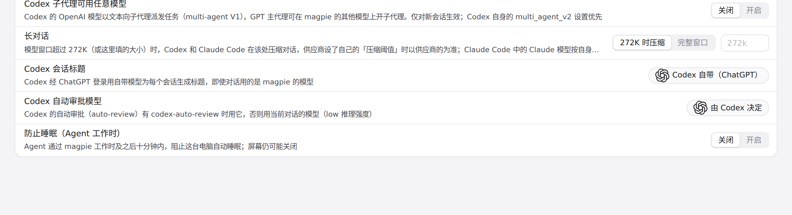
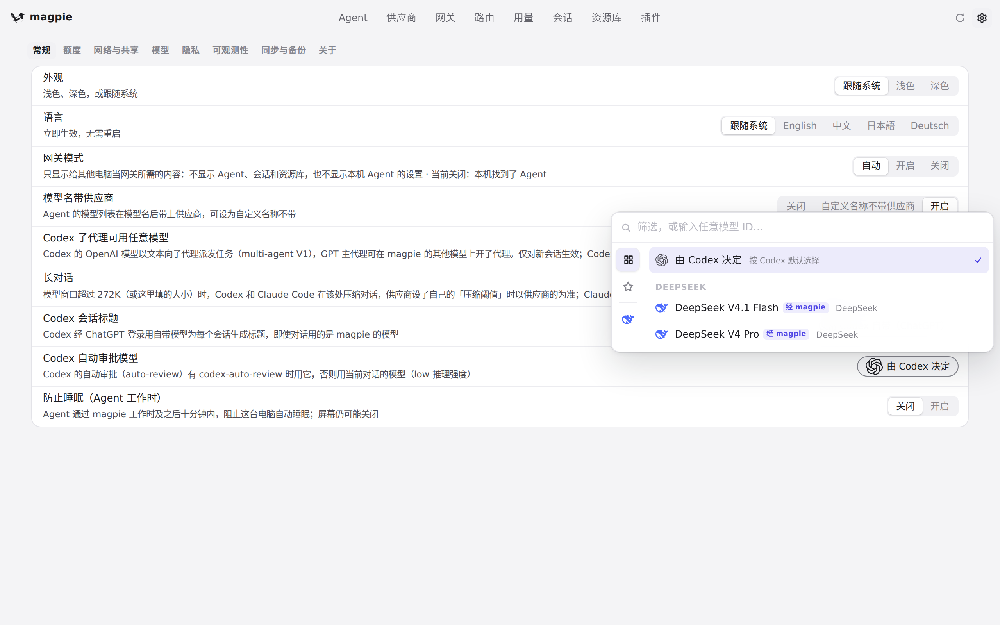

#943 界面预览
commit 1985331 · 回到 PR · 本 PR 只改了后端校验：设置里的 Codex 自动审批模型在保存时改用 provider.Served() 判断，未知名或空名（如 fake/missing、fake/）会被拒绝，不再覆盖已保存的审批模型，也不再改动 Codex 的目录标签。界面元素与文案没有新增或改动，变化只体现在设置里那个选择器提交后的行为上。
红线是鼠标走过的轨迹，红色圆环是一次点击；底部文字是这一步在做什么。空格暂停，← → 逐段查看。

Codex 自动审批模型的可选项 · 设置 · 常规里的「Codex 自动审批模型」，当前为「由 Codex 决定」

Codex 自动审批模型的可选项 · 展开后列出的可选模型